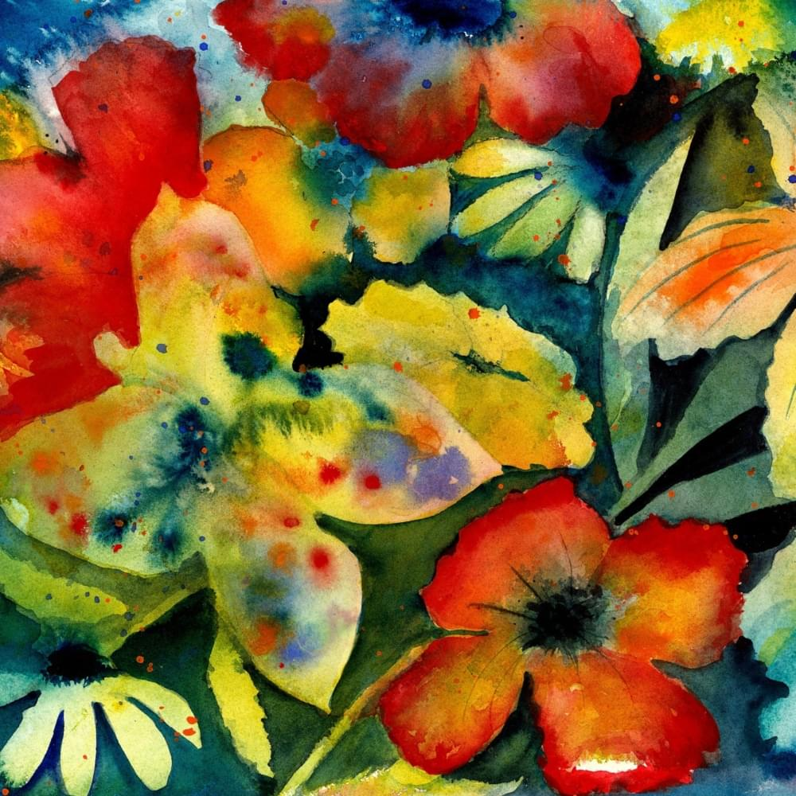

Adrianne Lenker
enjoy it! while listening to the music on this web
i am sorry because maybe on this website there will be a lot of text that i have said before. but i hope you can still enjoy it
kak Fahdellah R, the person that i love so much. a person with beautiful eyes, which never fail to make me keep staring at them. tidak hanya mata, her eyebrows, her nose, her smile, her lips and everything about her is so beautiful. meski sudah berulang kali kukatakan bahwa seniorku ini sangat hebat but i will never get tired of it. yang di maksud dengan kata "hebat" tidak melulu persoalan keberhasilan bisa jadi karena mau melakukan sesuatu yang bahkan tidak benar benar di inginkan untuk di lakukan, untuk keberanian dalam menghadapi sesuatu, untuk diri yang bertahan sampai detik ini dari semua hal hal yang berat, dan bahkan untuk kegagalan. penerimaan atas kegagalan dan menjadikan itu sebagai hal yang di pelajari untuk kedepannya. itu definisi "hebat" yang ku maksud darimu. seniorku, penyabar. sabar dalam menghadapi sesuatu (ya walau kadang menghadapinya diselingi misuh misuh), tetapi itu wajar. and im still proud of you karena masih mau menyelesaikannya selalu, dan dalam menghadapi saya (terutama). i love her thinking, she always makes me speechless with her thoughts, "mature and wise thinking" 2 kata yang menurutku cukup mendeskripsikan apa yang ku rasa dari pola pikir seniorku. and the last thing i can say this time is that my senior is a yapper. and i always love it when she doesn't stop yapp. you're my favorite yapper (just keep yapping and i'll always listen to you).
| Sen | Sel | Rab | Kam | Jum | Sab | Min |
|---|
13 sept 2024 the day we chat. maaf yang ku tau hanya hari di mana kita pertama kali chatan cause i dont know exactly what day we meet. but you should always know that meeting you is one of the things i am most grateful for. bahkan sampai sekarang rasa bersyukur, bahagia, bangga karena bertemu dan memiliki senior seperti kita itu masih ada dan tidak pernah berkurang. 20 oktober 2024 the day we call each other "senior and junior" dan jujur sampai sekarangpun masih suka nda nyangka bisa mempunyai senior seperti kita, jangankan mempunyai deh, bertemu dan menjadi dekatpun nda pernah terlintas dalam pikiranku. but now the fact is i have you, we have each other. thank you for being in my life. the last but not least, 28 januari 2025.. the day i first said i love you dan melalui website juga kan? dan sekarang untuk membaca text itu tidak lagi hanya melalui website tapi setiap waktu kita bisa membaca text itu, tidak hanya membaca tapi juga mendengarkan. i love you infinity and beyond, i love you till eternity. i love you a lot, more than a lot, more than you think i do.
your 911? yes, i am. i will always be your 911. tapi 911 tidak hanya ada ketika seniorku satu satunya itu lagi membutuhkan bantuan, tapi dalam segala kondisi 911 itu akan selalu ada. ada sebagai orang yang sangat bangga kepada seniornya, ada sebagai orang yang selalu memberikan support kepada seniornya, ada sebagai orang yang ingin selalu mengusahakan yang terbaik bagi seniornya, ada sebagai orang yang menerima apa adanya seniornya, intinya dalam segala hal 911 akan ada untuk seniornya. always remember, that i will always be there for you. no matter what happens. i will always be there for you. and i dont wanna be someone who's only there at your best, who only wants to hear about your success without being there during your process but i want to be the person who even when you're at your worst, lowest i will still be there. to be the person who not only accept your words of success but also your failures. who always accompanies you in every process and always convinces you that you have done your best and i am proud of you.
make my senior always happy, feel safe, and comfort, want to always be there for her, always give her all the best, and cook for kak dellaa
don't hurt kak della, don't make kak della sad, don't leave kak della, don't make kak della feel alone, don't make kak della a choice dan mau semarah apapun ke kak della jangan pernah memperlakukannya atau berkata tidak baik